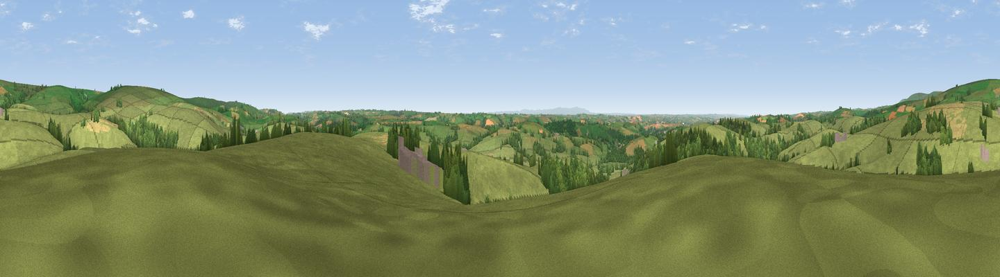

Sindercombe Hill
#11415 in England · top 19% of its area beats it · near TwitchenWhere it is
The exact computed spot (SS 78125 28225). Click the marker for map links.
The view, rendered

A 360° render of this exact spot computed from the terrain model, tree cover and land cover — summer colours, afternoon light, calibrated against photographs of famous viewpoints. Real trees, hedges and buildings will differ in detail.
The panorama
Grey silhouette: terrain skyline in each direction (720 bearings, Earth curvature and refraction included). Dashed green: skyline with trees (+15 m) and buildings (+8 m) as obstacles. Blue strip: how far the ground is visible on each bearing.
Where the view opens
Wedge length = distance to the farthest visible ground on that bearing (vegetation-aware). Rings at 10, 25 and 50 km.
What fills the view
84% grassland · 10% woodland · 5% cropland ·
Angular shares of the visible panorama (visual magnitude), not map area. Landscape diversity 0.24 (0–1 Shannon).
Key numbers
More beautiful places nearby
The staircase of upgrades: each row has a higher view potential than everything closer. Driving times are estimates from straight-line distance, calibrated against real road routing — check an actual route before setting out.
| Place | Direction | Drive | Score |
|---|---|---|---|
| Viewpoint near Twitchen | NE · 3 km | ~8 min | 66.0 |
| Viewpoint near Twitchen | N · 4 km | ~10 min | 69.1 |
| Viewpoint near Simonsbath | NNW · 9 km | ~17 min | 73.1 |
| Viewpoint near Brayford | NNW · 10 km | ~19 min | 74.1 |
| Viewpoint near Challacombe | NW · 13 km | ~24 min | 75.8 |
| Viewpoint near Exford | NE · 17 km | ~29 min | 77.1 |
| Viewpoint near Luccombe | NE · 17 km | ~30 min | 84.5 |
| Viewpoint near Luccombe | NE · 19 km | ~33 min | 84.6 |
51.04042, -3.73975 · source: dobih hill · position refined by local search. Computed location — check access rights before visiting.